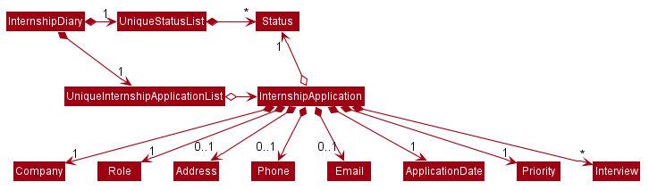

By: CS2103T-F10-2 Since: Feb 2020 Licence: MIT
- 1. Introduction
- 2. Setting up
- 3. Design
- 4. Implementation
- 5. Documentation
- 6. Testing
- 7. Dev Ops
- Appendix A: Product Scope
- Appendix B: User Stories
- Appendix C: Use Cases
- Appendix D: Non Functional Requirements
- Appendix E: Glossary
- Appendix F: Product Survey
- Appendix G: Instructions for Manual Testing
1. Introduction
This developer guide is for software developers or designers who want to understand the system design and implementation of InternshipDiary.
2. Setting up
Refer to the guide here.
3. Design
3.1. Architecture

The Architecture Diagram given above explains the high-level design of the App. Given below is a quick overview of each component.
The .puml files used to create diagrams in this document can be found in the diagrams folder.
Refer to the Using PlantUML guide to learn how to create and edit diagrams.
|
-
At app launch: Initializes the components in the correct sequence, and connects them up with each other.
-
At shut down: Shuts down the components and invokes cleanup method where necessary.
Commons represents a collection of classes used by multiple other components.
The following class plays an important role at the architecture level:
-
LogsCenter: Used by many classes to write log messages to the App’s log file.
The rest of the App consists of four components.
Each of the four components
-
Defines its API in an
interfacewith the same name as the Component. -
Exposes its functionality using a
{Component Name}Managerclass.
For example, the Logic component (see the class diagram given below) defines it’s API in the Logic.java interface and exposes its functionality using the LogicManager.java class.

How the architecture components interact with each other
The Sequence Diagram below shows how the components interact with each other for the scenario where the user issues the command delete 1.

delete 1 commandThe sections below give more details of each component.
3.2. UI component
API : Ui.java
The UI consists of a MainWindow that is made up of parts e.g.CommandBox, ResultDisplay, InternshipApplicationListPanel, StatusBarFooter etc. All these, including the MainWindow, inherit from the abstract UiPart class.
The UI component uses JavaFx UI framework. The layout of these UI parts are defined in matching .fxml files that are in the src/main/resources/view folder. For example, the layout of the MainWindow is specified in MainWindow.fxml
The UI component,
-
Executes user commands using the
Logiccomponent. -
Listens for changes to
Modeldata so that the UI can be updated with the modified data.
3.3. Logic component
API :
Logic.java
-
Logicuses theInternshipDiaryParserclass to parse the user command. -
This results in a
Commandobject which is executed by theLogicManager. -
The command execution can affect the
Model(e.g. adding an internship application). -
The result of the command execution is encapsulated as a
CommandResultobject which is passed back to theUi. -
In addition, the
CommandResultobject can also instruct theUito perform certain actions, such as displaying help to the user.
Given below is the Sequence Diagram for interactions within the Logic component for the execute("delete 1") API call.

delete 1 Command
The lifeline for DeleteCommandParser should end at the destroy marker (X) but due to a limitation of PlantUML, the lifeline reaches the end of diagram.
|
3.4. Model component

API : Model.java
The Model,
-
stores a
UserPrefobject that represents the user’s preferences. -
stores the Internship Diary data.
-
exposes an unmodifiable
ObservableList<InternshipApplication>that can be 'observed' e.g. the UI can be bound to this list so that the UI automatically updates when the data in the list change. -
does not depend on any of the other three components.
As a more OOP model, we can store a Status list in Internship Diary, which Internship Application can reference. This would allow Internship Diary to only require one Status object per unique Status, instead of each Internship Application needing their own Status object. An example of how such a model may look like is given below. |
3.5. Storage component
API : Storage.java
The Storage component,
-
can save
UserPrefobjects in json format and read it back. -
can save the Internship Diary data in json format and read it back.
3.6. Common classes
Classes used by multiple components are in the seedu.addressbook.commons package.
4. Implementation
This section describes some noteworthy details on how certain features are implemented.
4.1. [Proposed] Undo/Redo feature
4.1.1. Proposed Implementation
The undo/redo mechanism is facilitated by VersionedInternshipDiary.
It extends InternshipDiary with an undo/redo history, stored internally as an internshipDiaryStateList and currentStatePointer.
Additionally, it implements the following operations:
-
VersionedInternshipDiary#commit()— Saves the current internship diary state in its history. -
VersionedInternshipDiary#undo()— Restores the previous internship diary state from its history. -
VersionedInternshipDiary#redo()— Restores a previously undone internship diary state from its history.
These operations are exposed in the Model interface as Model#commitInternshipDiary(), Model#undoInternshipDiary() and Model#redoInternshipDiary() respectively.
Given below is an example usage scenario and how the undo/redo mechanism behaves at each step.
Step 1. The user launches the application for the first time. The VersionedInternshipDiary will be initialized with the initial internship diary state, and the currentStatePointer pointing to that single internship diary state.
Step 2. The user executes delete 5 command to delete the 5th internship application in the internship diary. The delete command calls Model#commitInternshipDiary(), causing the modified state of the internship diary after the delete 5 command executes to be saved in the internshipDiaryStateList, and the currentStatePointer is shifted to the newly inserted internship diary state.
Step 3. The user executes add c/Google … to add a new internship application. The add command also calls Model#commitInternshipDiary(), causing another modified internship diary state to be saved into the internshipDiaryStateList.
If a command fails its execution, it will not call Model#commitInternshipDiary(), so the internship diary state will not be saved into the internshipDiaryStateList.
|
Step 4. The user now decides that adding the internship application was a mistake, and decides to undo that action by executing the undo command. The undo command will call Model#undoInternshipDiary(), which will shift the currentStatePointer once to the left, pointing it to the previous internship diary state, and restores the internship diary to that state.
If the currentStatePointer is at index 0, pointing to the initial internship diary state, then there are no previous internship diary states to restore. The undo command uses Model#canUndoInternshipDiary() to check if this is the case. If so, it will return an error to the user rather than attempting to perform the undo.
|
The following sequence diagram shows how the undo operation works:
The lifeline for UndoCommand should end at the destroy marker (X) but due to a limitation of PlantUML, the lifeline reaches the end of diagram.
|
The redo command does the opposite — it calls Model#redoInternshipDiary(), which shifts the currentStatePointer once to the right, pointing to the previously undone state, and restores the internship diary to that state.
If the currentStatePointer is at index internshipDiaryStateList.size() - 1, pointing to the latest internship diary state, then there are no undone internship diary states to restore. The redo command uses Model#canRedoInternshipDiary() to check if this is the case. If so, it will return an error to the user rather than attempting to perform the redo.
|
Step 5. The user then decides to execute the command list. Commands that do not modify the internship diary, such as list, will usually not call Model#commitInternshipDiary(), Model#undoInternshipDiary() or Model#redoInternshipDiary(). Thus, the internshipDiaryStateList remains unchanged.
Step 6. The user executes clear, which calls Model#commitInternshipDiary(). Since the currentStatePointer is not pointing at the end of the internshipDiaryStateList, all internship diary states after the currentStatePointer will be purged. We designed it this way because it no longer makes sense to redo the add c/Google … command. This is the behavior that most modern desktop applications follow.
The following activity diagram summarizes what happens when a user executes a new command:
4.1.2. Design Considerations
Aspect: How undo & redo executes
-
Alternative 1 (current choice): Saves the entire internship diary.
-
Pros: Easy to implement.
-
Cons: May have performance issues in terms of memory usage.
-
-
Alternative 2: Individual command knows how to undo/redo by itself.
-
Pros: Will use less memory (e.g. for
delete, just save the internship application being deleted). -
Cons: We must ensure that the implementation of each individual command are correct.
-
Aspect: Data structure to support the undo/redo commands
-
Alternative 1 (current choice): Use a list to store the history of internship diary states.
-
Pros: Easy for new Computer Science student undergraduates to understand, who are likely to be the new incoming developers of our project.
-
Cons: Logic is duplicated twice. For example, when a new command is executed, we must remember to update both
HistoryManagerandVersionedInternshipDiary.
-
-
Alternative 2: Use
HistoryManagerfor undo/redo-
Pros: We do not need to maintain a separate list, and just reuse what is already in the codebase.
-
Cons: Requires dealing with commands that have already been undone: We must remember to skip these commands. Violates Single Responsibility Principle and Separation of Concerns as
HistoryManagernow needs to do two different things.
-
4.2. Sort command
The find command allows the user to sort the currently visible list of internship applications. The following sequence diagram will illustrate the process of invocation for the command:

The following subsections will go through the general implementations of the sort command.
4.2.1. Implementation
The find command is implemented in the class SortCommand and uses the SortCommandParser class to parse the
arguments for the command.
To facilitate the sort command, several comparator classes implementing Comparator<InternshipApplication> are used:
-
ApplicationDateComparator— Comparator to compare internship applications by theirApplicationDatefield in chronological order. -
CompanyComparator— Comparator to compare internship applications by theirCompanyfield in lexicographical order. -
PriorityComparator— Comparator to compare internship applications by theirPriorityfield in ascending order. -
RoleComparator— Comparator to compare internship applications by theirRolefield in lexicographical order. -
StatusComparator— Comparator to compare internship applications by theirStatusfield by the order which they are declared in the Status Enum class.
The SortCommandParser looks for a acceptable prefix in the command, and passes the corresponding comparator to SortCommand.
If the number of such prefixes found is not exactly one, SortCommandParser throws a ParseException.
4.2.2. Reverse sort
This version of the command is invoked when the user enters the command with reverse as the
preamble text in the parameter, e.g. sort reverse c/. After retrieving the correct comparator to use,
the parser would pass comparator.reversed() to the constructor of SortCommand instead of comparator.
This would reverse the order in which the currently visible list of internship applications is sorted in.
4.2.3. Design Considerations
Aspect: How to sort by multiple fields
-
Alternative 1 (current choice): Accept only one field to sort by when using SortCommand. This works as the list uses stable sort.
-
Pros: More streamlined, less complex.
EnteredCommandsHistoryallows the user to get the sort command template back in just one press of the up arrow key so there is little hassle.
Users do not have to remember the order to place the arguments to get the sort they want. -
Cons: Hard to explain the concept of stable sort in the User Guide.
-
-
Alternative 2: Allow multiple fields to sort by.
-
Pros: Two less key presses.
-
Cons: Code becomes much more complex.
Users has to remember the order to place the arguments to get the sort they want.
Users are highly unlikely to use this feature, as sorting one field by one feels more natural.
Harder to implement reverse sorting.
-
4.3. Clear command
The clear command allows the user to delete all internship applications. The following sequence diagram will illustrate the process of invocation for the command:

The following subsections will go through the general implementations of the clear command.
4.3.1. Implementation
The find command is implemented in the class InitClearCommand, ClearCommand and uses the
ClearCommandConfirmationParser class to parse the arguments for the command.
The implementation for this command is unique as it causes 'LogicManager' to use ClearCommandConfirmationParser,
which is a subclass of InternshipDiaryParser, as the main parser to parse the next user input.
4.3.2. Design Considerations
Aspect: How to prompt for confirmation.
-
Alternative 1 (current choice): Implement an abstract method
getNextParserfor all commands.-
Pros: Easy to extend.
New commands which require a prompt or alternative parsing do not need to further modify theInternshipDiaryParserorLogicManagerclass. -
Cons: All commands will have to implement a
getNextParsermethod. AsgetNextParserreturnsnullfor most commands, an abstract class is used. However, this means that commands cannot extend other abstract classes in the future.
-
-
Alternative 2: Have
InternshipDiaryParserhave different modes depending on what command was last executed.-
Pros: Simple to understand.
-
Cons:
InternshipDiaryParserhas no access to the next mode the command leads into,LogicManagerneeds to pass it intoInternshipDiaryParser.
As the different modes do not share code, they are better off as separate classes.
-
-
Alternative 3: Make a confirmation window which freeze the main window.
-
Pros: The
InternshipDiaryParserorLogicManagerclass may not need to be modified. -
Cons: Relies on global static methods which may lead to bugs in the future.
-
4.4. Interview and Interview Commands
4.4.1. Implementation
The implementation of interviews will be facilitated by two overarching components, the Model Class Interview
which is associated to an InternshipApplication (see Model Diagram Section 3.4, “Model component” ) and the Logic Classes InterviewCommandParser and InterviewCommand.
The class diagram below shows the classes associated to Interview. Interview will consist of the following variables:
-
booleanisOnline — indicates whether the interview is online. -
ApplicationDateinterviewDate — indicates the date of the interview. -
AddressinterviewAddress — indicates the address of the interview.
In particular, Interview will rely on the ApplicationDate and Address classes in the Model to implement interviewDate and interviewAddress

Interviews can only be modified through the interview command which relies upon InterviewCommandParser and InterviewCommand classes.
The interview command will encompass four types of sub-command: add list edit delete. Correspondingly, the InterviewCommand
class will be made abstract with specific implementation of each sub-command in an inheriting class, this can be seen in the diagram below.

Additionally, InterviewCommand will implement the InterviewCommand#getInternshipApplication(Model, Index) operation.
This is to facilitate all sub-commands to acquire the InternshipApplication to modify the Interview from.
InterviewCommandParser is the entry point to all interview sub-command. It will be invoked from InternshipDiaryParser
which is the primary logic parser for user input. The following sequence diagram will illustrate the process of invocation for
InterviewAddCommand. All other sub-commands will follow the same invocation format.

4.4.2. Design Considerations
Aspect: How to implement different interview commands
-
Alternative 1 (current choice): Use a standardized command with sub-command type parsed as user input.
-
Pros: More streamlined, only one command.
Able to use polymorphism to share operations between commands. -
Cons: Harder to implement and document.
-
-
Alternative 2: Use separate commands for each different method of modifying interview.
-
Pros: Easy to implement.
-
Cons: Makes the user remember more commands.
Create a lot of repetition in code.
-
4.5. Find command
The find command allows the user to get a filtered list of internship applications. The following sequence diagram will illustrate the process of invocation for the command:

The following subsections will go through the general implementations of the find command, as well as the 2 versions of the command, find any match, and find match by fields.
4.5.1. Implementation
The find command is implemented in the class FindCommand and uses the FindCommandParser class to parse the
arguments for the command.
To facilitate the find command, several predicates classes implementing Predicate<InternshipApplication> are used:
-
CompanyContainsKeywordsPredicate— Predicate to check if an internship application’sCompanyfield contains any substring matching any words in the list supplied by its constructorCompanyContainsKeywordsPredicate(List<String> keywords). -
RoleContainsKeywordsPredicate— Predicate to check if an internship application’sRolefield contains any substring matching any words in the list supplied by its constructorRoleContainsKeywordsPredicate(List<String> keywords). -
AddressContainsKeywordsPredicate— Predicate to check if an internship application’sAddressfield contains any substring matching any words in the list supplied by its constructorAddressContainsKeywordsPredicate(List<String> keywords). -
PhoneContainsNumbersPredicate— Predicate to check if an internship application’sPhonefield contains any substring matching any words in the list supplied by its constructorPhoneContainsNumbersPredicate(List<String> numbers). -
EmailContainsKeywordsPredicate— Predicate to check if an internship application’sEmailfield contains any substring matching any words in the list supplied by its constructorEmailContainsKeywordsPredicate(List<String> keywords). -
PriorityContainsNumbersPredicate— Predicate to check if an internship application’sPhonefield contains any substring matching any words in the list supplied by its constructorPriorityContainsNumbersPredicate(List<String> numbers).. -
ApplicationDateIsDatePredicate— Predicate to check if an internship application’sApplicationDatefield is exactly the date supplied by its constructorApplicationDateIsDatePredicate(LocalDate date). -
StatusContainsKeywordsPredicate— Predicate to check if an internship application’sStatusfield contains any substring matching any words in the list supplied by its constructorStatusContainsKeywordsPredicate(List<String> keywords).
4.5.2. Find Any Match
This version of the command is invoked when the user enters the command with preamble text in the parameter, e.g.
find google facebook or find google r/software. The command will perform search for any internship application
where any of the fields Company, Role, Address, Phone, Email, Priority or Status contains a substring
matching at least one word in the preamble and display them, e.g. find google facebook will look for internship
applications whose any of the above fields contains the substring google or facebook.
The searching and displaying of the internship application is done by performing an OR operation on all the predicates
CompanyContainsKeywordsPredicate, RoleContainsKeywordsPredicate, AddressContainsKeywordsPredicate,
PhoneContainsNumbersPredicate, EmailContainsKeywordsPredicate, PriorityContainsNumbersPredicate and
StatusContainsKeywordsPredicate to get a single predicate and passing that into the method
updateFilteredInternshipApplicationList() of the ModelManager instance.
4.5.3. Find Match by Fields
This version of the command is invoked when the user enters the command without any preamble text in the parameter, e.g.
find c/google r/software. The command will perform a search for any internship application where the fields
Company, Role, Address, Phone, Email, ApplicationDate, Priority and Status match any of the supplied
word after their respective prefixes (if a field’s prefix is not specified, the field is not checked),
e.g. find c/google facebook d/01 02 2020 will look for internship applications where the Company field contains
a substring google or facebook and the ApplicationDate field matching the date 1st February 2020.
The searching and displaying of the internship application is done by performing an AND operation on the
required predicates that is any of CompanyContainsKeywordsPredicate, RoleContainsKeywordsPredicate,
AddressContainsKeywordsPredicate, PhoneContainsNumbersPredicate, EmailContainsKeywordsPredicate,
ApplicationDateIsDatePredicate, PriorityContainsNumbersPredicate and StatusContainsKeywordsPredicate to get a
single predicate and passing that into the method updateFilteredInternshipApplicationList() of the ModelManager
instance.
4.5.4. Design Considerations
Aspect: How to implement the different versions of find command
-
Alternative 1 (current choice): Use a standardized command with the version to invoke determined by the type of user input parameters.
-
Pros: More streamlined, only one command.
This ensures that the user dont have to remember multiple command to use the different versions. -
Cons: Longer and less specific execute method.
-
-
Alternative 2: Use separate commands for the different versions of find.
-
Pros: More specific execute method for each of the command.
-
Cons: Makes the user remember more commands.
-
-
Alternative 3: Use the first word of the user input parameter to select which version of find command to invoke.
-
Pros: Slightly more streamlined than multiple commands.
This still requires user to remember the right words to invoke the different versions. -
Cons: Longer and less specific execution method.
-
4.6. Archival Feature
This feature allows users to store their internship application(s) into the archival.
The entire mechanism is driven by three commands: 1) archival, 2) archive, 3) unarchive.
4.6.1. Implementation
The following sequence diagrams illustrates how these commands are executed.
1) The archival command is to switch the view from the master list to archival list, where they will be able to view
their archived internship applications.

2) The archive command moves an internship application from the main list to the archival list.
3) The unarchive command moves an internship application from the archival list to the main list.
In essence, a user would use the archival or list command to switch between their views and execute the
archive or unarchive command respectively. To be specific, a user should not archive an internship application when it is
already in the archival — doing so will raise an exception. This is identical for the unarchive command in the master list
as well.
To further illustrate the above process, you may view the activity diagram that follows.
4.6.2. Design Considerations
Aspect: How to implement the internship application archival mechanism
-
Alternative 1 (current choice): Manipulate the current view of the internship diary to accommodate the archival mechanism. This is easily achieved with efficient use of the FilteredList and Predicates, along with a boolean isArchived variable for each internship application to help us decide if the internship application should be rendered.
-
Pros: Cleaner code and more maintainable codebase. More efficient use of memory and resources as well.
-
Cons: Users have to be mindful of the two different views in the internship diary.
-
-
Alternative 2: Create a separate internship diary dedicated to handle archived internship applications.
-
Pros: Straightforward and intuitive.
This should be easily understood by users as the idea is to replicate the current internship diary, with the same commands and features. To move internship application, one just has to archive / unarchive from the appropriate internship diary. -
Cons: Users will have to deal with two internship diaries, which can be undesirable. This approach is memory-inefficient as well.
-
4.7. Statistics Feature
This feature allows users to view relevant metrics for their internship application(s).
Such metrics include the amount of internship applications sent, and the percentage of internship applications in each
status category — wishlist, applied, interview, offered, rejected.
Users will be able to view those metrics from two areas on the application: 1) StatisticsBarFooter, and 2) StatisticsWindow.
4.7.1. Implementation
StatisticsBarFooter serves as a quick view of the internship applications count. This bar footer is always visible to user
and is attached to the MainWindow of the application.
StatisticsWindow serves as an additional graphical statistics interface for users to get a visual breakdown of their internship
application(s) in the form of a bar chart or pie chart.
Users will be able to bring up the StatisticsWindow by executing the command stats.
4.7.2. Design Considerations
Aspect: Which list to retrieve data from to generate statistics
-
Alternative 1 (current choice): Using filtered ObservableList
The filtered list is dynamically updated byfindandsortcommand. The statistics model will generate statistics based on the dynamic filtering changes that occur in the list (the current view selected by user).-
Pros: Users will be choose which list they want to view the relevant statistics for. Works well with
archival,list, andfindcommands that dynamically changes the list. -
Cons: Often re-computation upon changes in the filtered list may cause some performance bottleneck.
-
-
Alternative 2: Using base list that contains all of the internship application(s) The base list is not filtered according to predicate(s) set by users.
-
Pros: Recomputes lesser than using filtered ObservableList as it only recomputes upon addition(s), deletion(s), or changes in an internship application stored in the list.
-
Cons: May be unintuitive to some extent for users when the statistics do not tally with the current view of the list.
-
Aspect: How to store the statistics generated from data
A list of internship application(s) will be passed into the statistics model and upon function call, the statistics model will iterate through the list and generate/update the latest statistics accordingly.
-
Alternative 1 (current choice): Storing the mapping between each status and count using a HashMap
The idea is to retrieve all the statuses available from the enum (whenever the statistics model is created) and creating a HashMap with those status as the key and respective count as the value.-
Pros: Extensible and reusable. Regardless of any changes, this system can dynamically handle the addition, deletion, or changes in statuses.
-
Cons: Seemingly negligible cons for our particular usage.
-
-
Alternative 2: Store each status count in separate variables that are initialized upon the creation of statistics model.
-
Pros: Straightforward and very easy to understand for future developers.
-
Cons: Very inextensible.
-
4.8. Reminder Command
The reminder command displays to users a list of internship applications which:
-
have status
wishlistand need to be submitted in 7 days -
have status
interviewand interviews scheduled in 7 days
The following sequence diagram shows how the command is executed:
ReminderCommand4.8.1. Implementation
The reminder command is implemented in the class ReminderCommand and instantiates two predicates
ApplicationDateDuePredicate and InterviewDateDuePredicate with every call of the command.
To facilitate the reminder command, several predicates classes implementing Predicate<InternshipApplication> are used:
-
ApplicationDateDuePredicate— Predicate to check whether theApplicationDatefield of an internship application has a date of the current date or within 7 days of the current date. -
StatusIsWishlistPredicate— Predicate to check whether theStatusfield of an internship application iswishlist. -
InterviewDateDuePredicate— Predicate to check whether there is at least one interview in theArrayList<Interview> interviewsof an internship application that has a date of the current date or within 7 days from the current date. -
StatusIsInterviewPredicate— Predicate to check whether theStatusfield of an internship application isinterview. -
IsNotArchivedPredicate— Predicate to check whether an internship application is not archived.
Firstly, an AND operation on the ApplicationDateDuePredicate and StatusIsWishlistPredicate as well as another
AND operation on the InterviewDateDuePredicate and StatusIsInterviewPredicate are performed. Next, an OR
operation is performed on the predicates from the previous two AND operations. An 'AND' operation is then performed on
the predicate obtained from the previous OR operation and the IsNotArchivedPredicate. The final predicate produced is
then passed into the method updateFilteredInternshipApplicationList() of the ModelManager instance.
A comparator ApplicationDateAndInterviewDateComparator implementing Comparator<InternshipApplication> is also
passed into the method updateFilteredInternshipApplicationList() of the ModelManager instance to sort internship
applications in terms of which application is more urgent. It compares internship applications by their
ApplicationDate field as well as the earliest interview date in the ArrayList<Interview> interviews of the
applications, in order of either date being closer to current date. If two internship applications have the same date
in their ApplicationDate field, it compares them by the earliest interview date in the ArrayList<Interview>
interviews of the applications in order of which application has an interview that comes first.
4.8.2. Design considerations
Aspect: The order to display the internship applications
-
Alternative 1 (current choice): Display the internship applications in the order of either their
ApplicationDateorinterviewDateof the earliest interview scheduled inArrayList<Interview> interviewsis closer to current date.-
Pros: More useful to the user as the user can directly know which internship application to focus on more, regardless of whether it is to prepare for the submission of the application, or to prepare for an interview scheduled.
-
Cons: Longer code.
-
-
Alternative 2: Display the internship applications in the order of which application’s
ApplicationDateis closer to current date.-
Pros: Cleaner code.
-
Cons: Has the assumption that an internship application with a earlier
ApplicationDatewill have an interview scheduled at an earlierinterviewDateas compared to an application with laterApplicationDate. User might miss out on a earlierinterviewDatefor an application with laterApplicationDateand additional commands have to be typed in to checkinterviewDate.
-
4.9. Logging
We are using java.util.logging package for logging. The LogsCenter class is used to manage the logging levels and logging destinations.
-
The logging level can be controlled using the
logLevelsetting in the configuration file (See Section 4.10, “Configuration”) -
The
Loggerfor a class can be obtained usingLogsCenter.getLogger(Class)which will log messages according to the specified logging level -
Currently log messages are output through:
Consoleand to a.logfile.
Logging Levels
-
SEVERE: Critical problem detected which may possibly cause the termination of the application -
WARNING: Can continue, but with caution -
INFO: Information showing the noteworthy actions by the App -
FINE: Details that is not usually noteworthy but may be useful in debugging e.g. print the actual list instead of just its size
4.10. Configuration
Certain properties of the application can be controlled (e.g user prefs file location, logging level) through the configuration file (default: config.json).
5. Documentation
Refer to the guide here.
6. Testing
Refer to the guide here.
7. Dev Ops
Refer to the guide here.
Appendix A: Product Scope
Target user profile:
-
is a Computer Science student
-
is looking for an internship
-
has a need to organise internship application
-
is a fast typist
-
is comfortable using CLI apps
Value proposition: An easy to use CLI program that can help students to organise and plan for their internship
Appendix B: User Stories
Priorities: High (must have) - * * *, Medium (nice to have) - * *, Low (unlikely to have) - *
| Priority | As a … | I want to … | So that I can… |
|---|---|---|---|
|
user |
trace all my internship application’s contact |
easily follow up on the application |
|
user |
tag each application with a status |
track my internship application phase |
|
self-reflecting user |
mark what positions of internship I have been applying to |
see which positions I have the best chance of getting and easily look up past internship application when applying to similar positions |
|
user |
set reminders for internship deadlines/appointments |
make sure I do not miss any internship opportunities |
|
user |
be able to add companies I wish to apply to in a wish-list |
apply to them when the window opens |
|
self-reflecting user |
see at which stage my internship application failed |
get a better idea of what to improve on |
|
future job seeker |
use this program to easily reference successful applications |
apply them to future endeavours |
|
disorganised user |
store my cover letters |
easily refer to them when applying for internships |
|
user |
give a rating to each internship based on my preference |
easily decide which internship to prioritise |
|
frequent interviewee |
maintain a checklist of questions to ask the interviewer |
|
|
first-time internship seeker |
use the program as a guide to internship applications |
learn how to start applying for an internship |
{More to be added}
Appendix C: Use Cases
(For all use cases below, the System is the Internship Diary (InternDiary) and the Actor is the user, unless specified otherwise)
Use case: UC1 - Find Internship Application
MSS
-
User requests to find a specific Internship Application by company name.
-
InternDiary shows the Internship Application with all its corresponding fields.
Use case ends.
Extensions
-
2a. No Internship Application is shown.
Use case ends.
Use case: UC2 - Edit Internship Application
MSS
-
User find Internship Application UC1.
-
User requests to edit the fields of the Internship Application.
-
InternDiary updates the new fields of the Internship Application.
Use case ends
Extensions
-
2a. The given index is invalid.
-
2a1. InternDiary shows an error message
Use case resumes at step 1
-
Use case: UC3 - Prioritise Internship Application
MSS
-
User find Internship Application UC1.
-
User requests to prioritise the Internship Application.
-
InternDiary updates the priority level of the Internship Application.
Use case ends
Use case: UC4 - Sort Internship Application
MSS
-
User requests to sort the list.
-
InternDiary sorts the list.
-
InternDiary displays the sorted list.
-
Footer displays the field which list is sorted by.
Use case ends
Extensions
-
1a. InternDiary detects invalid syntax.
-
1a.1. InternDiary shows an error message.
Use case ends
-
{More to be added}
Appendix D: Non Functional Requirements
Accessibility
-
The source code should be open source.
Availability
-
The application is available around the clock and free-of-charge to the public.
-
The application is available for download on our GitHub release page in the form of a JAR file.
Capacity
-
The application should be able to store up to 1000 internship applications.
Performance
-
Response time to any user action is within 3 seconds (including application start-up).
-
The application should be able to contain and handle up to 300 internship applications before facing any form of performance bottleneck issues.
Reliability
-
The application should never fail if user actions are appropriate according to the user guide.
-
The application should warn the user if it is unable to execute any of the user actions for various reasons.
Compatibility
-
The application should work as intended on any popular operating systems.
-
The application is guaranteed to work on Java version 11.
Usability
-
The application should be intuitive and easy-to-learn, such that users can become proficient within a day.
-
The application should prioritse displaying important and relevant information to users.
-
A user with above average typing speed for regular English text (i.e. not code, not system admin commands) should be able to accomplish most of the tasks faster using commands than using the mouse.
Robustness
-
The application should be designed in a timeless manner, such that it would remain highly relevant to internship application at any point in the future.
Integrity
-
The application should require periodical user updates to the data to ensure its integrity and that it is up-to-date and relevant.
Maintainability
-
The application should be compliant with the coding standard set forth by CS2103.
-
The application should be compliant with best coding practices highlighted in CS2103.
-
The application should be designed and implemented elegantly such that any programmer with at least a year of experience should be able to read, maintain, and contribute to the source code easily.
Process
-
The project is expected to deliver a feature when necessary and feasible.
Project Scope
-
The application is not required to trace or detect internship application and add to the system automatically.
Accessibility, Capacity, Compliance with regulations, Documentation, Disaster recovery, Efficiency, Extensibility, Fault tolerance, Interoperability, Maintainability, Privacy, Portability, Quality, Reliability, Response time, Robustness, Scalability, Security, Stability, Testability, and more …
{More to be added}
Appendix E: Glossary
- Mainstream OS
-
Windows, Linux, Unix, OS-X
- Internship application
-
An application made by the user to a company offering an internship position
- Fields
-
A list of descriptions for an internship application grouped by type
- Window preferences
-
The last application window size and location the user used before shutdown
Appendix F: Product Survey
Huntr
Pros:
-
Uses online database
-
Uses kanban board for drag and drop management
Cons:
-
Cannot use CLI for interactions with the system
-
Cannot use without internet connection
-
Cannot use without signing up for an account
-
Cannot get filtered list, the whole board is always shown and can be disorganised
-
Cannot directly get reminders for deadlines, must add a new task
Appendix G: Instructions for Manual Testing
Given below are instructions to test the app manually.
| These instructions only provide a starting point for testers to work on; testers are expected to do more exploratory testing. |
G.1. Launch and Shutdown
-
Initial launch
-
Download the jar file and copy into an empty folder
-
Double-click the jar file
Expected: Shows the GUI with a set of sample contacts. The window size may not be optimum.
-
-
Saving window preferences
-
Resize the window to an optimum size. Move the window to a different location. Close the window.
-
Re-launch the app by double-clicking the jar file.
Expected: The most recent window size and location is retained.
-
{ more test cases … }
G.2. Deleting an internship application
-
Deleting an internship application while all internship applications are listed
-
Prerequisites: List all internship applications using the
listcommand. Multiple internship applications in the list. -
Test case:
delete 1
Expected: First contact is deleted from the list. Details of the deleted contact shown in the status message. Timestamp in the status bar is updated. -
Test case:
delete 0
Expected: No internship application is deleted. Error details shown in the status message. Status bar remains the same. -
Other incorrect delete commands to try:
delete,delete x(where x is larger than the list size) {give more}
Expected: Similar to previous.
-
{ more test cases … }
G.3. Saving data
-
Dealing with missing/corrupted data files
-
{explain how to simulate a missing/corrupted file and the expected behavior}
-
{ more test cases … }